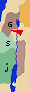
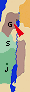
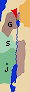
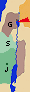

|
|
 Sección 5: Tercera misión galilea: el Sermón del lago
(Jun 28 - Sep 28)
Sección 5: Tercera misión galilea: el Sermón del lago
(Jun 28 - Sep 28)
Jesús comienza un nuevo viaje misionero por la región galilea.
En Naím
resucita al hijo de una viuda
(Jun 28).
|
|
 # # | Resurrección del Joven de Naím | |||
|  |  7:11 Y sucedió que a continuación se fue a una ciudad llamada Naím, e iban con él sus discípulos y una gran muchedumbre. 7:11 Y sucedió que a continuación se fue a una ciudad llamada Naím, e iban con él sus discípulos y una gran muchedumbre.7:12 Cuando se acercaba a la puerta de la ciudad, sacaban a enterrar a un muerto, hijo único de su madre, que era viuda, a la que acompañaba mucha gente de la ciudad. 7:13 Al verla el Señor, tuvo compasión de ella, y le dijo: «No llores.» 7:14 Y, acercándose, tocó el féretro. Los que lo llevaban se pararon, y él dijo: «Joven, a ti te digo: Levántate.» 7:15 El muerto se incorporó y se puso a hablar, y él se lo dio a su madre. 7:16 El temor se apoderó de todos, y glorificaban a Dios, diciendo: «Un gran profeta se ha levantado entre nosotros», y «Dios ha visitado a su pueblo». 7:17 Y lo que se decía de él, se propagó por toda Judea y por toda la región circunvecina. |
|||
| # | Juan Bautista manda a preguntar a sus discípulos | |||
|  | 11:2 Juan, que en la cárcel había oído hablar de las obras de Cristo, envió a sus discípulos a decirle: 11:3 «¿Eres tú el que ha de venir, o debemos esperar a otro?» 11:4 Jesús les respondió: «Id y contad a Juan lo que oís y veis: 11:5 los ciegos ven y los cojos andan, los leprosos quedan limpios y los sordos oyen, los muertos resucitan y se anuncia a los pobres la Buena Nueva; 11:6 ¡y dichoso aquel que no halle escándalo en mí!» |
7:18 Sus discípulos llevaron a Juan todas estas noticias. Entonces él, llamando a dos de ellos, 7:19 los envió a decir al Señor: «¿Eres tú el que ha de venir, o debemos esperar a otro?» 7:20 Llegando donde él aquellos hombres, dijeron: «Juan el Bautista nos ha enviado a decirte: ¿Eres tú el que ha de venir o debemos esperar a otro?» 7:21 En aquel momento curó a muchos de sus enfermedades y dolencias, y de malos espíritus, y dio vista a muchos ciegos. 7:22 Y les respondió: «Id y contad a Juan lo que habéis visto y oído: Los ciegos ven, los cojos andan, los leprosos quedan limpios, los sordos oyen, los muertos resucitan, se anuncia a los pobres la Buena Nueva; 7:23 ¡y dichoso aquel que no halle escándalo en mí!» |
||
| # | Testimonio de Jesús acerca del Bautista | |||
| 11:7 Cuando éstos se marchaban, se puso Jesús a hablar de Juan a la gente: «¿Qué salisteis a ver en el desierto? ¿Una caña agitada por el viento? 11:8 ¿Qué salisteis a ver, si no? ¿Un hombre elegantemente vestido? ¡No! Los que visten con elegancia están en los palacios de los reyes. 11:9 Entonces ¿a qué salisteis? ¿A ver un profeta? Sí, os digo, y más que un profeta. 11:10 Este es de quien está escrito: He aquí que yo envío mi mensajero delante de ti, que preparará por delante tu camino. 11:11 «En verdad os digo que no ha surgido entre los nacidos de mujer uno mayor que Juan el Bautista; sin embargo, el más pequeño en el Reino de los Cielos es mayor que él. 11:12 Desde los días de Juan el Bautista hasta ahora, el Reino de los Cielos sufre violencia, y los violentos lo arrebatan. 11:13 Pues todos los profetas, lo mismo que la Ley, hasta Juan profetizaron. 11:14 Y, si queréis admitirlo, él es Elías, el que iba a venir. 11:15 El que tenga oídos, que oiga. |
7:24 Cuando los mensajeros de Juan se alejaron, se puso a hablar de Juan a la gente: «¿Qué salisteis a ver en el desierto? ¿Una caña agitada por el viento? 7:25 ¿Qué salisteis a ver, si no? ¿Un hombre elegantemente vestido? ¡No! Los que visten magníficamente y viven con molicie están en los palacios. 7:26 Entonces, ¿qué salisteis a ver? ¿Un profeta? Sí, os digo, y más que un profeta. 7:27 Este es de quien está escrito: He aquí que envío mi mensajero delante de ti, que preparará por delante tu camino. 7:28 «Os digo: Entre los nacidos de mujer no hay ninguno mayor que Juan; sin embargo el más pequeño en el Reino de Dios es mayor que él. 7:29 Todo el pueblo que le escuchó, incluso los publicanos, reconocieron la justicia de Dios, haciéndose bautizar con el bautismo de Juan. 7:30 Pero los fariseos y los legistas, al no aceptar el bautismo de él, frustraron el plan de Dios sobre ellos. |
|||
| # | Los oyentes tercos "Os tocamos la flauta y no danzasteis..." | |||
| 11:16 «¿Pero, con quién compararé a esta generación? Se parece a los chiquillos que, sentados en las plazas, se gritan unos a otros diciendo: 11:17 "Os hemos tocado la flauta, y no habéis bailado, os hemos entonado endechas, y no os habéis lamentado." 11:18 Porque vino Juan, que ni comía ni bebía, y dicen: "Demonio tiene." 11:19 Vino el Hijo del hombre, que come y bebe, y dicen: "Ahí tenéis un comilón y un borracho, amigo de publicanos y pecadores." Y la Sabiduría se ha acreditado por sus obras.»  |
7:31 «¿Con quién, pues, compararé a los hombres de esta generación? Y ¿a quién se parecen? 7:32 Se parecen a los chiquillos que están sentados en la plaza y se gritan unos a otros diciendo: "Os hemos tocado la flauta, y no habéis bailado, os hemos entonando endechas, y no habéis llorado." 7:33 «Porque ha venido Juan el Bautista, que no comía pan ni bebía vino, y decís: "Demonio tiene." 7:34 Ha venido el Hijo del hombre, que come y bebe, y decís: "Ahí tenéis un comilón y un borracho, amigo de publicanos y pecadores." 7:35 Y la Sabiduría se ha acreditado por todos sus hijos.» |
|||
| # | La pecadora perdonada unge sus pies "A quien se perdona poco, ama poco" | |||
|  | 7:36 Un fariseo le rogó que comiera con él, y, entrando en la casa del fariseo, se puso a la mesa. 7:37 Había en la ciudad una mujer pecadora pública, quien al saber que estaba comiendo en casa del fariseo, llevó un frasco de alabastro de perfume, 7:38 y poniéndose detrás, a los pies de él, comenzó a llorar, y con sus lágrimas le mojaba los pies y con los cabellos de su cabeza se los secaba; besaba sus pies y los ungía con el perfume. 7:39 Al verlo el fariseo que le había invitado, se decía para sí: «Si éste fuera profeta, sabría quién y qué clase de mujer es la que le está tocando, pues es una pecadora.» 7:40 Jesús le respondió: «Simón, tengo algo que decirte.» El dijo: «Di, maestro.» 7:41 Un acreedor tenía dos deudores: uno debía quinientos denarios y el otro cincuenta. 7:42 Como no tenían para pagarle, perdonó a los dos. ¿Quién de ellos le amará más?» 7:43 Respondió Simón: «Supongo que aquel a quien perdonó más.» El le dijo: «Has juzgado bien», 7:44 y volviéndose hacia la mujer, dijo a Simón: «¿Ves a esta mujer? Entré en tu casa y no me diste agua para los pies. Ella, en cambio, ha mojado mis pies con lágrimas, y los ha secado con sus cabellos. 7:45 No me diste el beso. Ella, desde que entró, no ha dejado de besarme los pies. 7:46 No ungiste mi cabeza con aceite. Ella ha ungido mis pies con perfume. 7:47 Por eso te digo que quedan perdonados sus muchos pecados, porque ha mostrado mucho amor. A quien poco se le perdona, poco amor muestra.» 7:48 Y le dijo a ella: «Tus pecados quedan perdonados.» 7:49 Los comensales empezaron a decirse para sí: «¿Quién es éste que hasta perdona los pecados?» 7:50 Pero él dijo a la mujer: «Tu fe te ha salvado. Vete en paz.» |
|||
| # | Las mujeres del séquito de Jesús | |||
| 8:1 Y sucedió a continuación que iba por ciudades y pueblos, proclamando y anunciando la Buena Nueva del Reino de Dios; le acompañaban los Doce, 8:2 y algunas mujeres que habían sido curadas de espíritus malignos y enfermedades: María, llamada Magdalena, de la que habían salido siete demonios, 8:3 Juana, mujer de Cusa, un administrador de Herodes, Susana y otras muchas que les servían con sus bienes. |
||||
| # | Los verdaderos parientes de Cristo | |||
| 12:46 Todavía estaba hablando a la muchedumbre, cuando su madre y sus hermanos se presentaron fuera y trataban de hablar con él. 12:47 Alguien le dijo: «¡Oye! ahí fuera están tu madre y tus hermanos que desean hablarte.» 12:48 Pero él respondió al que se lo decía: «¿Quién es mi madre y quiénes son mis hermanos?» 12:49 Y, extendiendo su mano hacia sus discípulos, dijo: «Estos son mi madre y mis hermanos. 12:50 Pues todo el que cumpla la voluntad de mi Padre del cielo, ése es mi hermano, mi hermana y mi madre.» |
3:20 Vuelve a casa. Se aglomera otra vez la muchedumbre de modo que no podían comer. 3:21 Se enteraron sus parientes y fueron a hacerse cargo de él, pues decían: «Está fuera de sí.» 3:31 Llegan su madre y sus hermanos, y quedándose fuera, le envían a llamar.3:32 Estaba mucha gente sentada a su alrededor. Le dicen: «¡Oye!, tu madre, tus hermanos y tus hermanas están fuera y te buscan.» 3:33 El les responde: «¿Quién es mi madre y mis hermanos?» 3:34 Y mirando en torno a los que estaban sentados en corro, a su alrededor, dice: «Estos son mi madre y mis hermanos. 3:35 Quien cumpla la voluntad de Dios, ése es mi hermano, mi hermana y mi madre.» |
8:19 Se presentaron donde él su madre y sus hermanos, pero no podían llegar hasta él a causa de la gente. 8:20 Le anunciaron: «Tu madre y tus hermanos están ahí fuera y quieren verte.» 8:21 Pero él les respondió: «Mi madre y mis hermanos son aquellos que oyen la Palabra de Dios y la cumplen.» |
||
| # | El sermón del lago: Parábolas del Reino | |||
| # | La parábola del sembrador | |||
|  | 13:1 Aquel día, salió Jesús de casa y se sentó a orillas del mar. 13:2 Y se reunió tanta gente junto a él, que hubo de subir a sentarse en una barca, y toda la gente quedaba en la ribera. 13:3 Y les habló muchas cosas en parábolas. Decía: «Una vez salió un sembrador a sembrar. 13:4 Y al sembrar, unas semillas cayeron a lo largo del camino; vinieron las aves y se las comieron. 13:5 Otras cayeron en pedregal, donde no tenían mucha tierra, y brotaron enseguida por no tener hondura de tierra; 13:6 pero en cuanto salió el sol se agostaron y, por no tener raíz, se secaron. 13:7 Otras cayeron entre abrojos; crecieron los abrojos y las ahogaron. 13:8 Otras cayeron en tierra buena y dieron fruto, una ciento, otra sesenta, otra treinta. 13:9 El que tenga oídos, que oiga.» |
4:1 Y otra vez se puso a enseñar a orillas del mar. Y se reunió tanta gente junto a él que hubo de subir a una barca y, ya en el mar, se sentó; toda la gente estaba en tierra a la orilla del mar. 4:2 Les enseñaba muchas cosas por medio de parábolas. Les decía en su instrucción: 4:3 «Escuchad. Una vez salió un sembrador a sembrar. 4:4 Y sucedió que, al sembrar, una parte cayó a lo largo del camino; vinieron las aves y se la comieron. 4:5 Otra parte cayó en terreno pedregoso, donde no tenía mucha tierra, y brotó en seguida por no tener hondura de tierra; 4:6 pero cuando salió el sol se agostó y, por no tener raíz, se secó. 4:7 Otra parte cayó entre abrojos; crecieron los abrojos y la ahogaron, y no dio fruto. 4:8 Otras partes cayeron en tierra buena y, creciendo y desarrollándose, dieron fruto; unas produjeron treinta, otras sesenta, otras ciento.» 4:9 Y decía: «Quien tenga oídos para oír, que oiga.» |
8:4 Habiéndose congregado mucha gente, y viniendo a él de todas las ciudades, dijo en parábola: 8:5 «Salió un sembrador a sembrar su simiente; y al sembrar, una parte cayó a lo largo del camino, fue pisada, y las aves del cielo se la comieron; 8:6 otra cayó sobre piedra, y después de brotar, se secó, por no tener humedad; 8:7 otra cayó en medio de abrojos, y creciendo con ella los abrojos, la ahogaron. 8:8 Y otra cayó en tierra buena, y creciendo dio fruto centuplicado.» Dicho esto, exclamó: «El que tenga oídos para oír, que oiga.» |
|
| # | "¿Por qué les hablas en parábolas?" | |||
| 13:10 Y acercándose los discípulos le dijeron: «¿Por qué les hablas en parábolas?» 13:11 El les respondió: «Es que a vosotros se os ha dado el conocer los misterios del Reino de los Cielos, pero a ellos no. 13:12 Porque a quien tiene se le dará y le sobrará; pero a quien no tiene, aun lo que tiene se le quitará. 13:13 Por eso les hablo en parábolas, porque viendo no ven, y oyendo no oyen ni entienden. 13:14 En ellos se cumple la profecía de Isaías: Oír, oiréis, pero no entenderéis, mirar, miraréis, pero no veréis. 13:15 Porque se ha embotado el corazón de este pueblo, han hecho duros sus oídos, y sus ojos han cerrado; no sea que vean con sus ojos, con sus oídos oigan, con su corazón entiendan y se conviertan, y yo los sane. |
4:10 Cuando quedó a solas, los que le seguían a una con los Doce le preguntaban sobre las parábolas. 4:11 El les dijo: «A vosotros se os ha dado el misterio del Reino de Dios, pero a los que están fuera todo se les presenta en parábolas, 4:12 para que por mucho que miren no vean, por mucho que oigan no entiendan, no sea que se conviertan y se les perdone.» |
8:9 Le preguntaban sus discípulos qué significaba esta parábola, 8:10 y él dijo: «A vosotros se os ha dado el conocer los misterios del Reino de Dios; a los demás sólo en parábolas, para que viendo, no vean y, oyendo, no entiendan. |
||
| # | La parábola del sembrador explicada | |||
| 13:18 «Vosotros, pues, escuchad la parábola del sembrador. 13:19 Sucede a todo el que oye la Palabra del Reino y no la comprende, que viene el Maligno y arrebata lo sembrado en su corazón: éste es el que fue sembrado a lo largo del camino. 13:20 El que fue sembrado en pedregal, es el que oye la Palabra, y al punto la recibe con alegría; 13:21 pero no tiene raíz en sí mismo, sino que es inconstante y, cuando se presenta una tribulación o persecución por causa de la Palabra, sucumba enseguida. 13:22 El que fue sembrado entre los abrojos, es el que oye la Palabra, pero los preocupaciones del mundo y la seducción de las riquezas ahogan la Palabra, y queda sin fruto. 13:23 Pero el que fue sembrado en tierra buena, es el que oye la Palabra y la comprende: éste sí que da fruto y produce, uno ciento, otro sesenta, otro treinta.» |
4:13 Y les dice: «¿No entendéis esta parábola? ¿Cómo, entonces, comprenderéis todas las parábolas? 4:14 El sembrador siembra la Palabra. 4:15 Los que están a lo largo del camino donde se siembra la Palabra son aquellos que, en cuanto la oyen, viene Satanás y se lleva la Palabra sembrada en ellos. 4:16 De igual modo, los sembrados en terreno pedregoso son los que, al oír la Palabra, al punto la reciben con alegría, 4:17 pero no tienen raíz en sí mismos, sino que son inconstantes; y en cuanto se presenta una tribulación o persecución por causa de la Palabra, sucumben en seguida. 4:18 Y otros son los sembrados entre los abrojos; son los que han oído la Palabra, 4:19 pero las preocupaciones del mundo, la seducción de las riquezas y las demás concupiscencias les invaden y ahogan la Palabra, y queda sin fruto. 4:20 Y los sembrados en tierra buena son aquellos que oyen la Palabra, la acogen y dan fruto, unos treinta, otros sesenta, otros ciento.» |
8:11 «La parábola quiere decir esto: La simiente es la Palabra de Dios. 8:12 Los de a lo largo del camino, son los que han oído; después viene el diablo y se lleva de su corazón la Palabra, no sea que crean y se salven. 8:13 Los de sobre piedra son los que, al oír la Palabra, la reciben con alegría; pero éstos no tienen raíz; creen por algún tiempo, pero a la hora de la prueba desisten. 8:14 Lo que cayó entre los abrojos, son los que han oído, pero a lo largo de su caminar son ahogados por las preocupaciones, las riquezas y los placeres de la vida, y no llegan a madurez. 8:15 Lo que en buena tierra, son los que, después de haber oído, conservan la Palabra con corazón bueno y recto, y dan fruto con perseverancia. |
||
| # | La lámpara sobre el candelero | |||
| 4:21 Les decía también: «¿Acaso se trae la lámpara para ponerla debajo del celemín o debajo del lecho? ¿No es para ponerla sobre el candelero? 4:22 Pues nada hay oculto si no es para que sea manifestado; nada ha sucedido en secreto, sino para que venga a ser descubierto. 4:23 Quien tenga oídos para oír, que oiga.» 4:24 Les decía también: «Atended a lo que escucháis. Con la medida con que midáis, se os medirá y aun con creces. 4:25 Porque al que tiene se le dará, y al que no tiene, aun lo que tiene se le quitará.» |
8:16 «Nadie enciende una lámpara y la cubre con una vasija, o la pone debajo de un lecho, sino que la pone sobre un candelero, para que los que entren vean la luz. 8:17 Pues nada hay oculto que no quede manifiesto, y nada secreto que no venga a ser conocido y descubierto. 8:18 Mirad, pues, cómo oís; porque al que tenga, se le dará; y al que no tenga, aun lo que crea tener se le quitará.» |
|||
| # | Parábola de la semilla que crece sola | |||
| 4:26 También decía: «El Reino de Dios es como un hombre que echa el grano en la tierra; 4:27 duerma o se levante, de noche o de día, el grano brota y crece, sin que él sepa cómo. 4:28 La tierra da el fruto por sí misma; primero hierba, luego espiga, después trigo abundante en la espiga. 4:29 Y cuando el fruto lo admite, en seguida se le mete la hoz, porque ha llegado la siega.» |
||||
| # | Parábola del trigo y la cizaña | |||
| 13:24 Otra parábola les propuso, diciendo: «El Reino de los Cielos es semejante a un hombre que sembró buena semilla en su campo. 13:25 Pero, mientras su gente dormía, vino su enemigo, sembró encima cizaña entre el trigo, y se fue. 13:26 Cuando brotó la hierba y produjo fruto, apareció entonces también la cizaña. 13:27 Los siervos del amo se acercaron a decirle: "Señor, ¿no sembraste semilla buena en tu campo? ¿Cómo es que tiene cizaña?" 13:28 El les contestó: "Algún enemigo ha hecho esto." Dícenle los siervos: "¿Quieres, pues, que vayamos a recogerla?" 13:29 Díceles: "No, no sea que, al recoger la cizaña, arranquéis a la vez el trigo. 13:30 Dejad que ambos crezcan juntos hasta la siega. Y al tiempo de la siega, diré a los segadores: Recoged primero la cizaña y atadla en gavillas para quemarla, y el trigo recogedlo en mi granero."» |
||||
| # | Parábola del grano de mostaza | |||
| 13:31 Otra parábola les propuso: «El Reino de los Cielos es semejante a un grano de mostaza que tomó un hombre y lo sembró en su campo. 13:32 Es ciertamente más pequeña que cualquier semilla, pero cuando crece es mayor que las hortalizas, y se hace árbol, hasta el punto de que las aves del cielo vienen y anidan en sus ramas.» |
4:30 Decía también: «¿Con qué compararemos el Reino de Dios o con qué parábola lo expondremos? 4:31 Es como un grano de mostaza que, cuando se siembra en la tierra, es más pequeña que cualquier semilla que se siembra en la tierra; 4:32 pero una vez sembrada, crece y se hace mayor que todas las hortalizas y echa ramas tan grandes que las aves del cielo anidan a su sombra.» |
13:18 Decía, pues: «¿A qué es semejante el Reino de Dios? ¿A qué lo compararé? 13:19 Es semejante a un grano de mostaza, que tomó un hombre y lo puso en su jardín, y creció hasta hacerse árbol, y las aves del cielo anidaron en sus ramas.» |
||
| # | Parábola del fermento | |||
| 13:33 Les dijo otra parábola: «El Reino de los Cielos es semejante a la levadura que tomó una mujer y la metió en tres medidas de harina, hasta que fermentó todo.» |
13:20 Dijo también: «¿A qué compararé el Reino de Dios? 13:21 Es semejante a la levadura que tomó una mujer y la metió en tres medidas de harina, hasta que fermentó todo.» |
|||
| # | La parábola de la cizaña explicada | |||
| 13:36 Entonces despidió a la multitud y se fue a casa. Y se le acercaron sus discípulos diciendo: «Explícanos la parábola de la cizaña del campo.» 13:37 El respondió: «El que siembra la buena semilla es el Hijo del hombre; 13:38 el campo es el mundo; la buena semilla son los hijos del Reino; la cizaña son los hijos del Maligno; 13:39 el enemigo que la sembró es el Diablo; la siega es el fin del mundo, y los segadores son los ángeles. 13:40 De la misma manera, pues, que se recoge la cizaña y se la quema en el fuego, así será al fin del mundo. 13:41 El Hijo del hombre enviará a sus ángeles, que recogerán de su Reino todos los escándalos y a los obradores de iniquidad, 13:42 y los arrojarán en el horno de fuego; allí será el llanto y el rechinar de dientes. 13:43 Entonces los justos brillarán como el sol en el Reino de su Padre. El que tenga oídos, que oiga. |
||||
| # | Parábola del tesoro y la perla | |||
| 13:44 «El Reino de los Cielos es semejante a un tesoro escondido en un campo que, al encontrarlo un hombre, vuelve a esconderlo y, por la alegría que le da, va, vende todo lo que tiene y compra el campo aquel.» 13:45 «También es semejante el Reino de los Cielos a un mercader que anda buscando perlas finas, 13:46 y que, al encontrar una perla de gran valor, va, vende todo lo que tiene y la compra. |
||||
| # | Parábola de la red y los peces buenos y malos | |||
| 13:47 «También es semejante el Reino de los Cielos a una red que se echa en el mar y recoge peces de todas clases; 13:48 y cuando está llena, la sacan a la orilla, se sientan, y recogen en cestos los buenos y tiran los malos. 13:49 Así sucederá al fin del mundo: saldrán los ángeles, separarán a los malos de entre los justos 13:50 y los echarán en el horno de fuego; allí será el llanto y el rechinar de dientes. |
||||
| # | Conclusión de las parábolas. Fin del sermón del lago | |||
| 13:34 Todo esto dijo Jesús en parábolas a la gente, y nada les hablaba sin parábolas, 13:35 para que se cumpliese el oráculo del profeta: Abriré en parábolas mi boca, publicaré lo que estaba oculto desde la creación del mundo. 13:51 «¿Habéis entendido todo esto?» Dícenle: «Sí.» 13:52 Y él les dijo: «Así, todo escriba que se ha hecho discípulo del Reino de los Cielos es semejante al dueño de una casa que saca de sus arcas lo nuevo y lo viejo.» |
4:33 Y les anunciaba la Palabra con muchas parábolas como éstas, según podían entenderle; 4:34 no les hablaba sin parábolas; pero a sus propios discípulos se lo explicaba todo en privado. |
|||

|